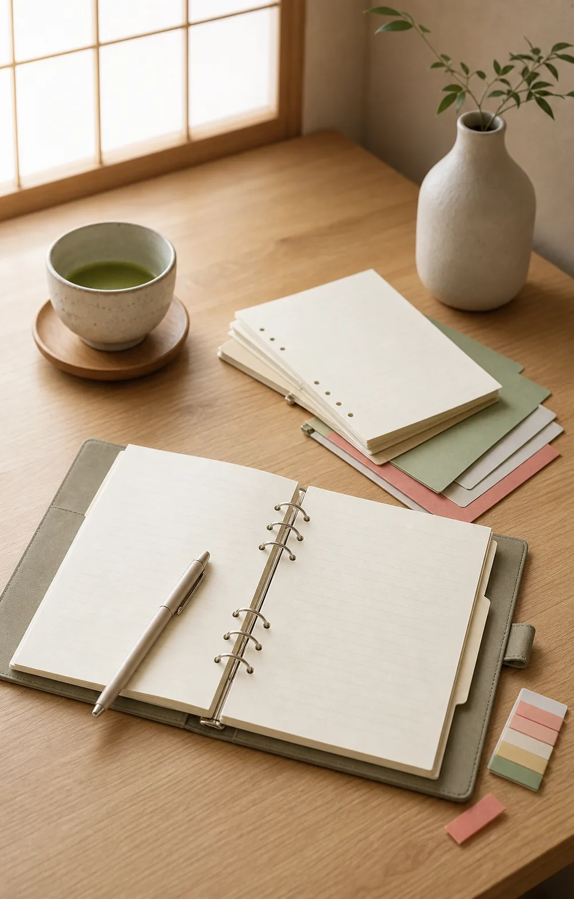

Eraser Culture
Why Is the MONO Eraser So Popular in Japan?
Follow a familiar Japanese eraser from its 1967 pencil-box origin to school desks and a color identity recognized across generations.
Read the eraser guideTools reveal culture
A notebook size, a pencil point, or the layout of a school desk can reveal how people learn, organize, and care for everyday tools.
These guides begin with Japanese culture and lived routines. Products appear only when they help readers experience that context for themselves.
Discover Japan’s Classic Pencil
Cultural guides
Follow a familiar Japanese eraser from its 1967 pencil-box origin to school desks and a color identity recognized across generations.
Read the eraser guide
A pencil born in 1945 connects postwar technical work, school habits, analog writing, and an enduring Japanese design.
Read the pencil guideSee how desks, bags, printed handouts, university life, and office paper shaped two familiar formats.
Read the size guide
Explore color coding, subject organization, study-with-me desks, and the appeal of a simple notebook system.
Read the Campus guide
Understand a slimmer system for moving pages and organizing active study, work, and projects.
Read the refillable guideGuides in development
Future topics include mechanical pencils, ballpoint pens, markers, stationery stores, study routines, and planner culture.